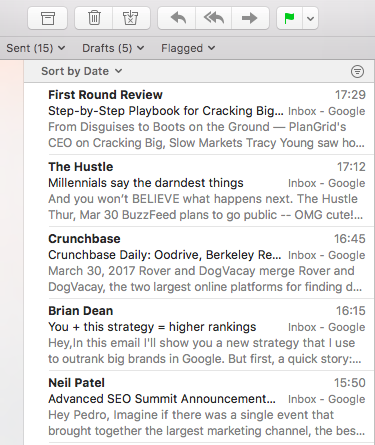
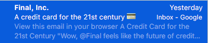

Damn!
It’s frustrating, right?
You send an email with an amazing content.
You craft a great subject line.
You even hired an external designer just for that email because you wanted to look fancy.
You hit the “send” button and…
(sound of crickets coming from outside…)
Nothing really happens.
One email opened here, another over there, but far from what you expected.
But why?
WHY?
(I’m with you! You should demand an explanation)
And that is what I am here for.
You know, you should look at an email as a gift, wrapped in paper.
And you know that not everyone likes gifts or surprises.
So, let’s compare the anatomy of a gift to better understand the anatomy of an email.
You have a gift, wrapped in a fancy paper.
Although that gift is in your “Christmas tree”, it could be anyone’s.
Your attention is not there yet.
How do you make sure that present is yours?
“THE NAME!”, you might ask.
And you are right.
You saw the name in the package and you saw your name on it.
It’s for you.
It’s in your “gift box” or, in this case, in your mailbox.
So, right now you are aware that you got a gift, or an email.
What will you search for next?
Now that I know it is for me, who gave it?
How is this important, you might ask?
Well, let me put it this way.
Go back in time and remember when you were 10.
Now, remember how you freaked-out when uncle Joe, that always gave you the best presents, had something for you and that you had the exact opposite feeling your granny had another pair of socks for you?
(You may return to today...)
Email sender is crucial, because it’s exactly where we can first fantasise about what’s inside.
We'll get to the package in a second. Right now the focus is with the "sender".
So, right now you know you have something for you, and you can see who sent it.
Oh boy, oh boy!!!!
I know, it might just be another “pair of socks”…
You know, 64% of people say that the main reason why they open an email is because of the sender.
And the correlation here with a gift is that you should remember that you want to build a relation where your sender’s name represents “uncle Joe” and not “granny”.
You want people to associate that from that sender they should open it because it will be great content, or great prizes, or great images, or whatever great you have to offer them.
Let me just share with you a power tip.
Imagine a company called Super Brand.
Now imagine Janice Andrews that works in that same company.
Now you receive an email from a sender named “Super Brand” and another email from a sender named “Janice Andrews”.
Which do you believe would have greater opening rates?
Yes, you are right. (you are... right?)
Super Brand immediately throws a commercial message. Unless you have a huge mental file for that brand in your brain, I am almost sure that email will be deleted before it touches down in that mailing box.
On the other hand, an email sent from Janice, at the end of the day, generates a curiosity about who the hell Janice is.
"I better open because it might be important".
When you get to that stage, what will people check next?
And you are right again.
You’re amazing.
You are absolutely correct.
The subject line.
47% of people say that that is their top reason for opening an email.
I use to say that the subject line works as the gift packaging in our example.
Does the subject sound promising?
(back to when we were 10…)
Will I get an Optimus Prime? Or another pair… of scissors for school?
(Ah, you were expecting socks again... But no. Granny's gift was unwrapped before.)
So, bare with me.
You have a gift, where the sender is amazingly important because it helps you fantasise what’s inside. Then you have the subject line that sets clearer expectations of what’s inside.
At this stage, people can make a decision.
The sender is “impersonal” and the subject line is not sufficiently interesting.
Remember. Everything we’ve been talking about so far, are ways for you to understand why emails aren’t being opened.
Is your brand well place inside your target’s brains?
Ok, you may send using a company email.
Is it not?
You may consider using a personal email where you can build relation and rapport towards your brand.
Will the same email and subject work both ways?
OF COURSE NOT!
If the sender is already different, the way you approach each email should also be different.
This is why email segmentation is so important.
You won’t offer a football ball as a gift to a girl that can only think about barbies.
Well, you may offer, but you shouldn’t expect a great reaction…
Email should be used the same way.
Be relevant, otherwise you’ll be attaching a feeling of frustration towards that specific sender and what that means is that in the future, the opening rate will get lower and lower… and lower... until final "unsubscribe".
In my experience, if you get the balance correct between these two, your email will most likely be opened.
But let me bring a third dimension to it.
The open paragraph.
You have the packaging with the sender written on it, but you know how you were when you were 10.
You always tried to pick to see what was inside.
You didn’t need much. Just an inch or two and that would be enough to know exactly what was inside.
And that is the same with emails.
Check the images below.


In these two examples you can see a bit of what’s inside.
Do you know what that means?
It means that, with this information, I can easily decide either I open or not an email.
Check it out.
I can see…
- who’s sending (sender)
- what they want to talk about (subject)
- and I can see the beginning of it (1st paragraph)
I can generate an exact expectation about what’s inside and I can easily delete the ones I don’t think will match my interests.
I don’t want more socks, right?
And a lot of people still send me a lot of "socks".
So, and to wrap this up, how can you maximise your opening rates?
It’s a combination of what I’ve been talking so far and remember about the gift analogy.
You want that whatever you’re sending, to generate a positive expectation in those that will be reading it.
Do you know who you’re sending to? How can you make sure your email will sound more like uncle Joe and less like “pair of socks” granny?
Let me give you an example.
Yesterday I got the email below.

I have no idea what “FINAL, Inc.” is. I may have subscribed to it but I honestly don’t remember.
The subject is interesting but unless I am in the need of a different credit card, I don’t have enough need to click on it. And then…
“View this email in your browser”…
And they lost me.
It’s commercial!!
A personal email will never have that message right as the first thing.
See how Neil Patel’s email above treats me by my name.
Can you sense the difference?
I may not open that email from Neil because the subject is not important to me, but I know that one day it might be and Neil’s emails are very well crafted.
Hope you enjoyed this content and feel free to leave a comment or question below. I'll try to answer them all.
Thanks in advance,
Pedro Martins - Startup Growth Geek